局部可驾驶实验 · 2026
从行车视频到可驾驶的 3D 高斯城市
用行车视频重建一小段街道，再把 3D 高斯场景接进浏览器，做成可驾驶的样段。
沿原来的车道驾驶，再试着横移或转向，就能检查哪些地方可以自由看，哪些地方还缺拍摄视角。
这是浏览器实录。先看车辆沿样段行驶，正文另有一段跨越两块场景的录像。
先看能驾驶的街区
让键盘驱动相机，实测跨块到终点
浏览器用 PlayCanvas 绘制高斯城市。路线记录提供纵向位置、道路朝向和相机；输入油门、刹车或方向键会改变沿线速度和横向偏移。车辆作为独立的可控层叠加到画面中。道路边界和接触阴影由代理提供，速度使用相对单位。
封面选择 A 段完整密度下的实机驾驶。双块实验则同时预载 1,005,514 和 916,315 个高斯，在重叠段切换显示。本次再录制时从约 41% 进度开始，经方向键前进到 100% 限位；下方保留这段跨块操作。原实测另已验证暂停、复位及返回第一块。
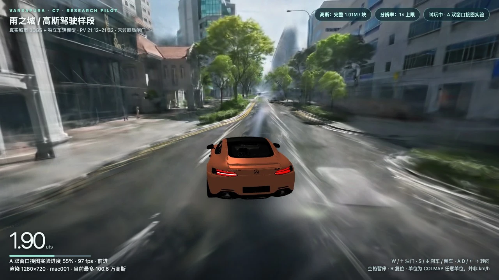
放大查看 ↗先从俯视图读懂路线
一段沿街行驶的视频，可以恢复路面和建筑的哪些部分？我们先用俯视图标出干道、路口、转弯和终点，再回到《雨之城》宣传片逐段找对应镜头。图上可见的转向和地标用来定位，未拍全的支路、尺度和楼背保留为规划估计。
按 A / J1 / B / C / J2 / D / E / F / Y 梳理全线后，在 21:12–24:56 范围规划了 36 个相互重叠的视频窗口。后文有三种不同的覆盖范围：规划图画到终点，相机位置已接到 22:20，有真实高斯且经过跨块驾驶验证的范围是 21:12–21:32。
- 对照俯视路线视频时间码与地标分段与重叠窗口
- 恢复观察位置前景遮罩与 COLMAP相机位姿及稀疏点
- 拟合街景LingBot 深度与 Brush分块高斯 PLY
- 检验可交互范围PlayCanvas 与键盘输入沿线驾驶、偏视角与接缝结果
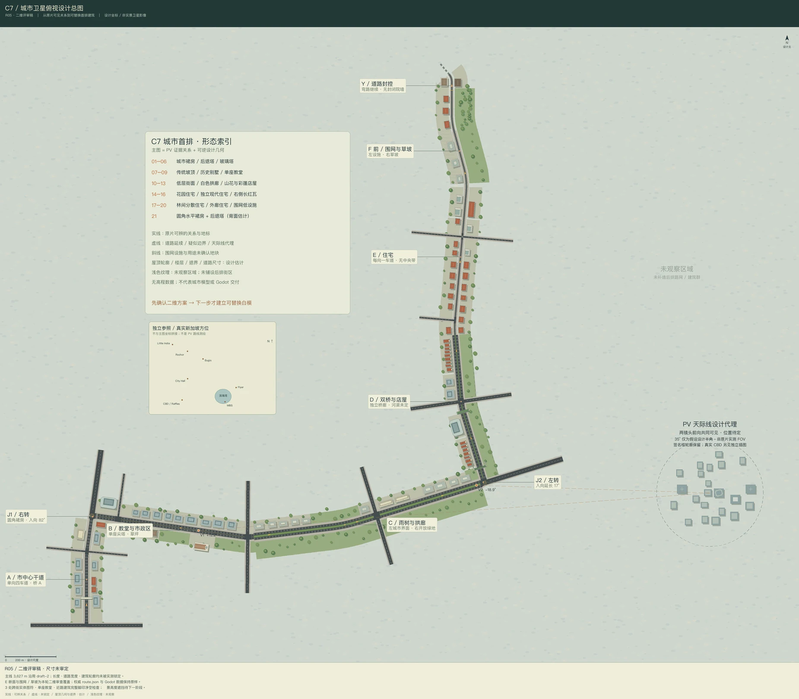
放大查看 ↗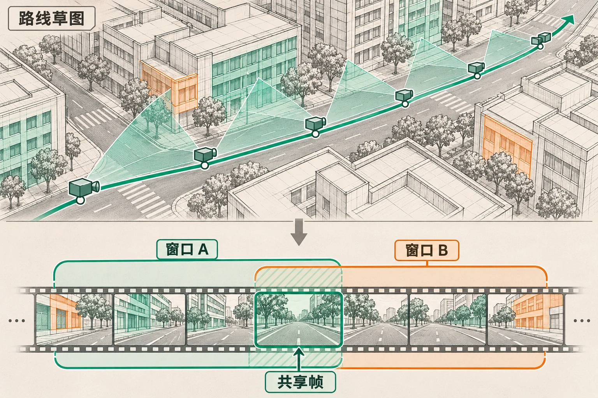
放大查看 ↗从视频求相机、训练和拼接
先解决相机在哪里，再训练街景
宣传片包含剪辑、运动中的车辆和被前车遮住的路面。最初挑的 6 秒追车镜头只注册了 2/24 帧；初次市区驾驶试验放宽约束后也只有 18/32 帧。少量匹配点不足以支撑这一段相机运动，我们转而使用连续的 1080p 街道样段，并遮掉会移动的像素。
在 A 段 21:12–21:20，以每秒 8 帧取样，64 帧全部获得局部相机位姿。COLMAP 根据多帧可重认的静态特征求相机相对位置；LingBot 给出视频深度，经过尺度对齐和筛选后，为高斯训练提供约 4 万个初始点。原录像里的车从静态训练中遮掉；被遮住的路面仍缺少直接观测。
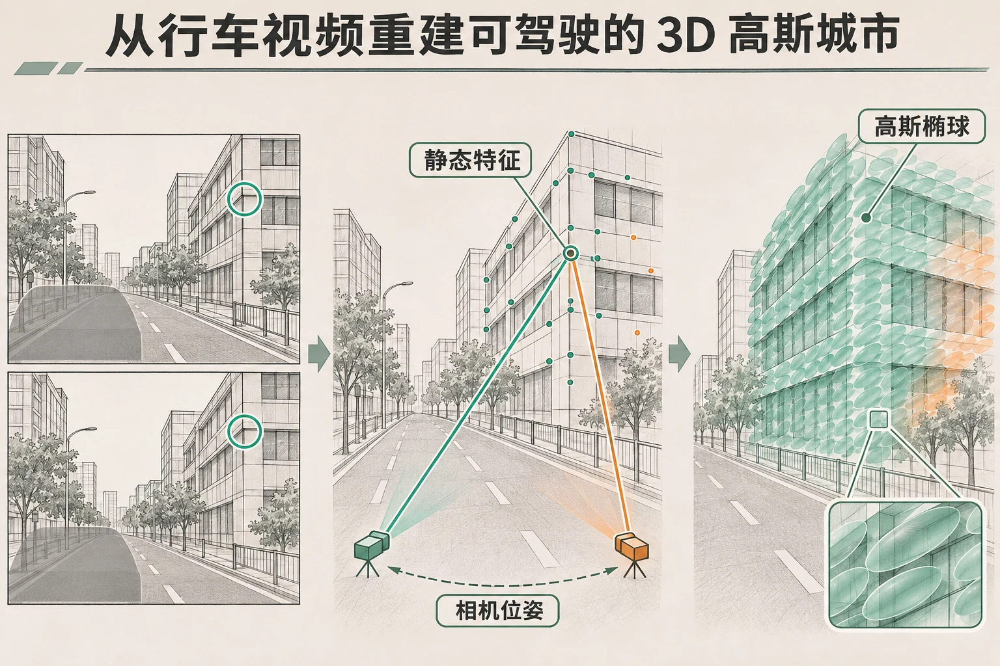
放大查看 ↗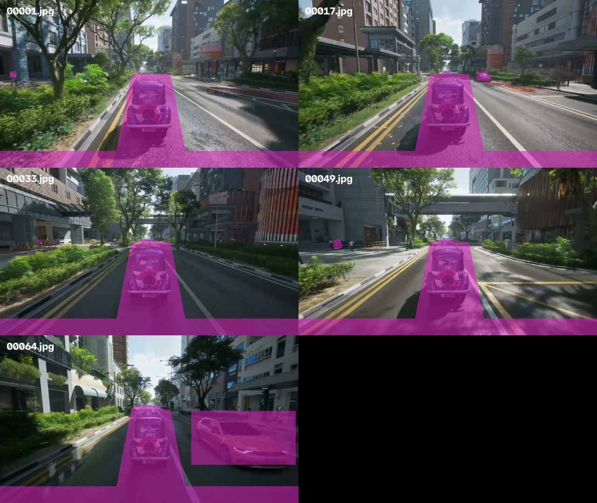
放大查看 ↗第一份能打开的高斯模型，能看到什么？
在同一段 8 秒视频上，我们先试了 MLX3D 的直接视频入口。内置位姿估计注册了 32 帧中的 18 帧，最后只剩 14 个稀疏点，训练在初始化前就停了。补入焦距先验后能注册到 26 帧，仍有 6 帧缺失。
换用 LingBot 的视频几何作为初值后，MLX3D 训练 2,000 步，导出了 43,885 个高斯。沿原方向能辨认出树冠和道路，但路面模糊，还残留车辆轮廓。把查看器转到侧面，街区只剩一条窄带。这个结果促使我们改用已解算的 64 个机位、动态遮罩和 Brush，分别检查原视角精度与偏视角覆盖。
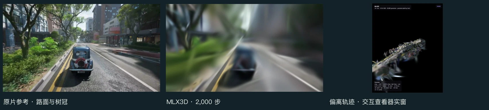
放大查看 ↗同一批留出帧上，多训一倍值多少？
在这台 Mac 上，Brush 把初始点优化为带位置、方向、尺度、颜色和透明度的高斯。先固定相机、输入图、遮罩和随机种子，用相同的 8 张留出帧比较 6,000 步与 12,000 步，在遮罩外的静态区域计算误差。
先只改初始点，以相同的 6,000 步比较：稀疏初始化的平均 PSNR 为 25.664 dB，加入对齐后的视频深度点，升至 25.770 dB。下图再固定这组深度初值，只改变训练步数。
高斯数从 2,020,318 增至 3,922,699，PLY 从 477 MB 增至 926 MB。平均 PSNR 从 25.770 升到 26.055 dB，RGB 平均绝对误差从 8.517 降到 8.160（0–255）。训练时间加长后，原机位的平均误差略降，但远处立面和车道纹理仍显得松散。试玩沿用较轻的 6,000 步版本。
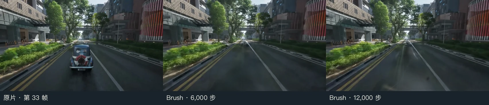
放大查看 ↗两块地图在什么地方能接上？
先把第一块延长到 21:26，再训练第二块 21:24–21:32。两块包含 16 张完全相同的重叠源帧。用共享机位拟合局部坐标之间的平移、旋转和统一尺度，并留出部分共享机位检查对齐误差。相邻路段可以由此接上，同时保留 COLMAP 的任意尺度。
把相机统一后，前十个窗口的轨迹共有 544 个不同机位，延至 22:20。双块可视实验只覆盖其中开头 20 秒，在 21:25 附近切换。第二块的 8 张留出帧平均 PSNR 为 22.172 dB。相同机位下，两块路面区域的平均绝对差达 18.548/255，肉眼能看到车道线和路面纹理跳变。
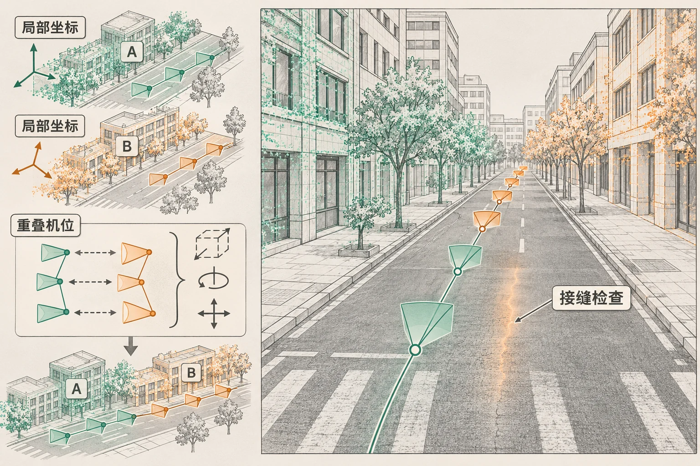
放大查看 ↗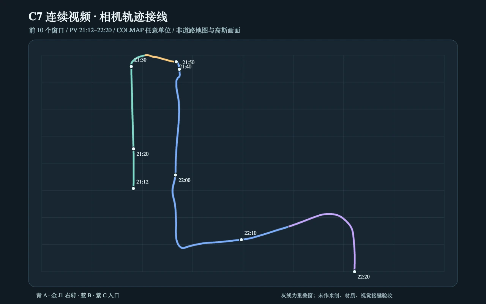
放大查看 ↗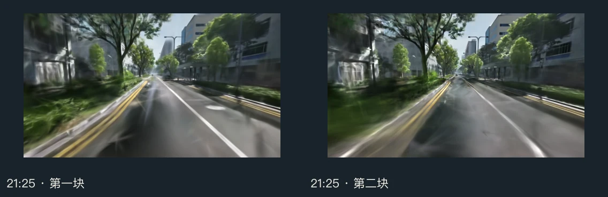
放大查看 ↗偏离原路线后还剩什么
离开原车道以后，画面怎样变化？
原机位附近，楼体边缘和路面纹理能在图像平面上对齐；多个不同深度的高斯也可能投在相近的像素位置。相机移向一侧，这些点之间的深度差就会显现。侧面或背面长期被遮住的建筑，视频能提供的约束更少。
我们让同一份 PLY 沿原轨迹重放，然后横移、转身。下方短片前 8 秒采用原相机轨迹，后 4 秒检查偏视角。地面出现拖长的纹理，转身画面有明显空洞。留出帧 PSNR 评价的是原机位附近的投影，自由观察还需要这种偏轨迹试验。
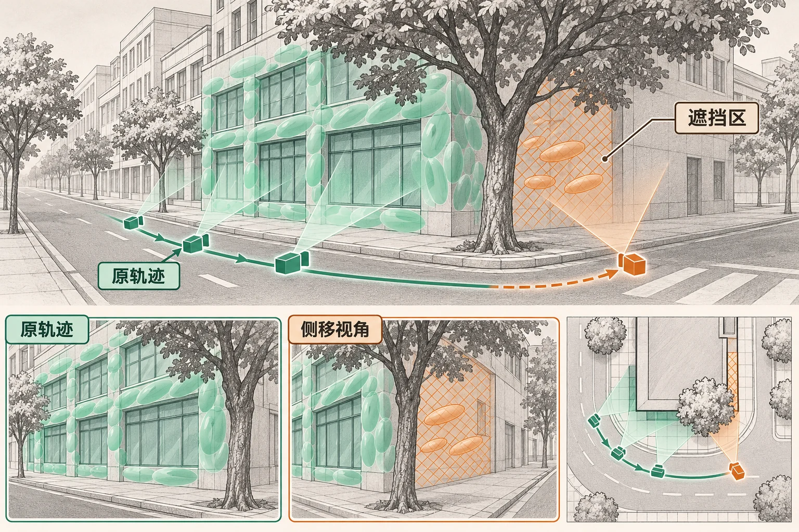
放大查看 ↗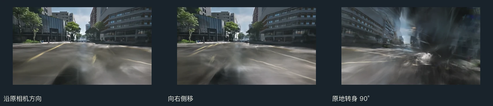
放大查看 ↗这次真正还原了多少城市？
已经跑通的是一条完整的局部制作流程：俯视规划定位镜头、视频求相机、训练静态街区、恢复共享坐标，最后让用户在浏览器里沿街驾驶。主样段覆盖 8 秒原片，最长已验证的双块驾驶实验覆盖 20 秒。
限制也能定位到具体环节。增加高斯对原视角有小幅收益，侧面缺少观测时仍会拉丝；相机配准可以通过，路面的视觉接缝依然明显。要向整线和自由漫游扩展，需要更多偏离原车道的观测、逐块接缝验证，以及可卸载的分块加载。